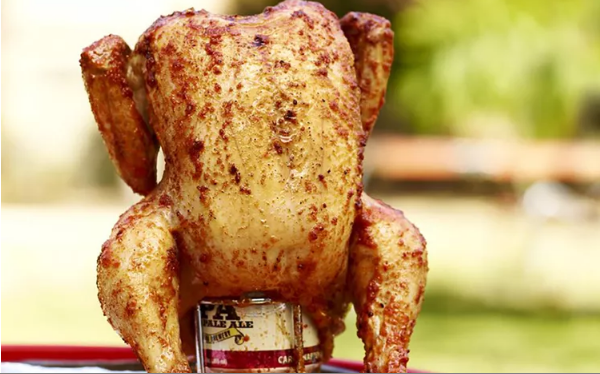

Beer Butt Chicken

For this beer butter chicken, all you need is a whole chicken, beer, butter, and seasonings. The chicken is seasoned and slowly cooked on the grill. This is a bit unorthodox, but the end result is moist and flavorful.
Ingredients
- 1 cup butter, divided
- 2 tablespoons garlic salt, divided
- 2 tablespoons paprika, divided
- salt and pepper to taste
- 1 (12 fluid ounce) can beer
- 1 (4 pound) whole chicken
Steps
- Preheat an outdoor grill for low heat and lightly oil the grate.
- Melt 1/2 cup butter in a small skillet. Mix in 1 tablespoon garlic salt, 1 tablespoon paprika, salt, and pepper.
- Discard 1/2 of the beer, leaving the remainder in the can. Add remaining butter, garlic salt, paprika, salt, and pepper to the beer can. Place the can on a baking sheet or disposable pan. Set chicken upright on the beer can, inserting the can into the cavity of the chicken. Baste chicken with melted, seasoned butter.
- Place the baking sheet with beer and chicken on the preheated grill. Cook over low heat until no longer pink at the bone and the juices run clear, about 3 hours. An instant-read thermometer inserted into the thickest part of the thigh, near the bone, should read 165 degrees F (74 degrees C).
- Remove from the grill, cover with a doubled sheet of aluminum foil, and allow to rest in a warm area for 10 minutes before slicing.